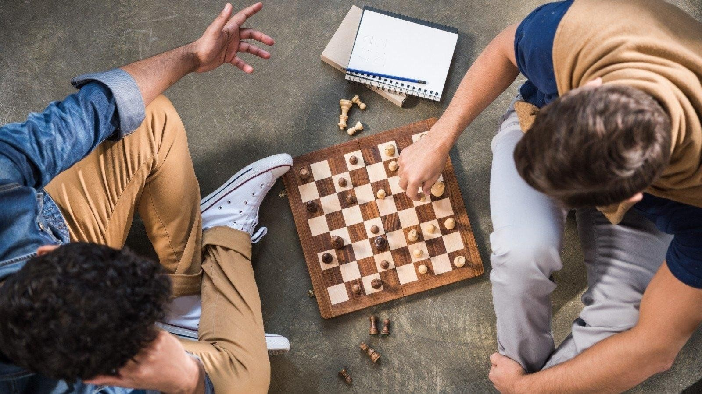

Директор клуба:
Намсараев Зорикто Абидаевич
номер: +7 800-555-35-35
▎Частный шахматный клуб «Зорикто»
Частный шахматный клуб «Зорикто» был основан в 2025 году и стал местом встречи любителей шахмат всех уровней. Клуб предлагает занятия для детей и взрослых, турниры и мастер-классы. В его стенах проводятся регулярные соревнования, способствующие развитию шахматной культуры в регионе.

▎Уникальная атмосфера клуба
Клуб «Зорикто» расположен в уютном и комфортабельном помещении, где созданы все условия для занятий шахматами. Здесь есть несколько игровых залов, оборудованных современными шахматными столами и удобными стульями. Атмосфера клуба способствует сосредоточенной игре и обмену опытом между участниками. В клубе также предусмотрены зоны для отдыха, где игроки могут обсудить свои партии, поделиться впечатлениями и просто пообщаться в неформальной обстановке.
▎Программы и мероприятия
Клуб регулярно проводит различные мероприятия, включая турниры, мастер-классы и лекции. Турниры привлекают участников из разных городов и стран, что создает возможность для игроков испытать свои силы на высоком уровне. Мастер-классы проводятся как для начинающих, так и для опытных игроков, что позволяет каждому найти подходящий формат обучения. В программе клуба также предусмотрены занятия для детей, что способствует популяризации шахмат среди молодежи.
▎Гроссмейстер Зорикто Намсараев
Одной из ключевых фигур клуба является знаменитый гроссмейстер Зорикто Намсараев. Он не только основатель клуба, но и его главный тренер. Зорикто — выдающийся шахматист, который достиг значительных успехов на международной арене. Его карьера началась в довольно позднем возрасте, но несмотря на это он проявил выдающиеся способности к шахматам и в короткие сроки завоевал титул гроссмейстера.
▎Достижения и вклад в шахматы
Зорикто Намсараев — многократный чемпион страны и участник различных международных турниров. Его стиль игры отличается стратегическим мышлением и глубоким пониманием шахматной тактики. Он активно делится своим опытом с молодыми игроками, обучая их не только технике игры, но и психологическим аспектам, которые играют важную роль в соревнованиях.
▎Сообщество и дружеская атмосфера
Клуб «Зорикто» стал местом притяжения для шахматистов, где царит дух дружбы и сотрудничества. Члены клуба поддерживают друг друга в стремлении к совершенству, обмениваются опытом и знаниями. Это сообщество единомышленников создает уникальную атмосферу, в которой каждый может найти поддержку и вдохновение для дальнейшего роста.
